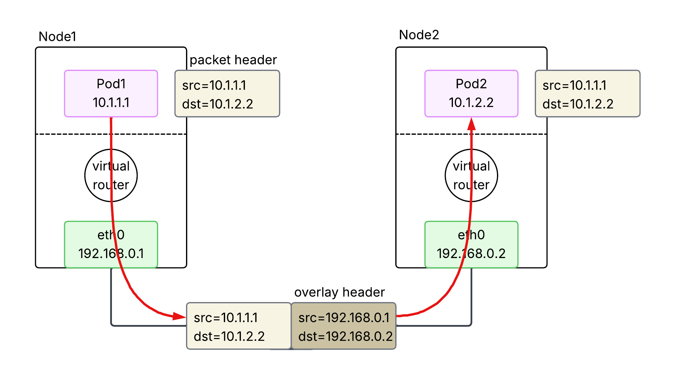
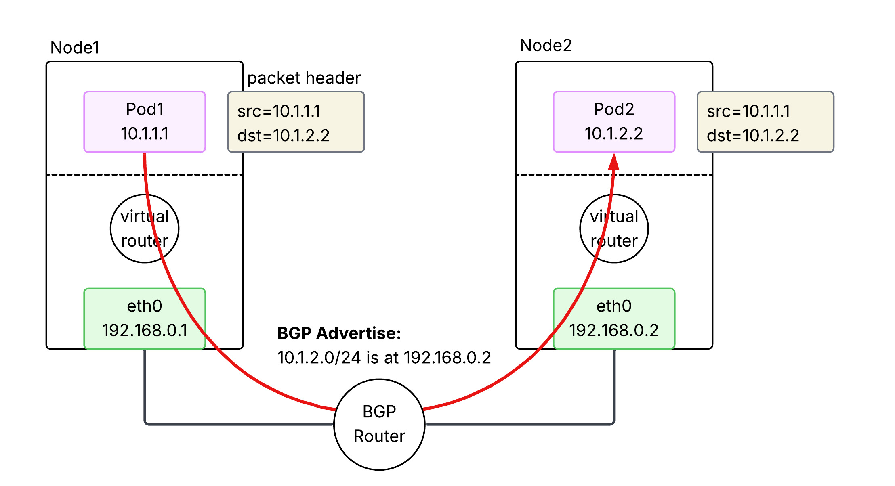
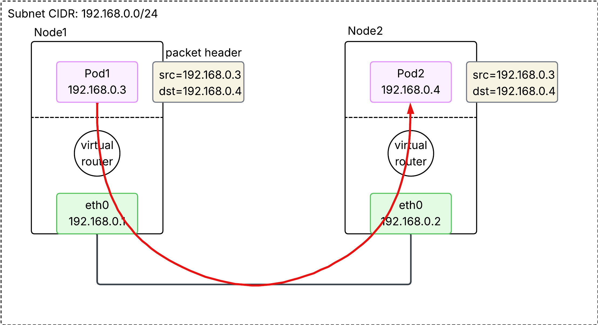
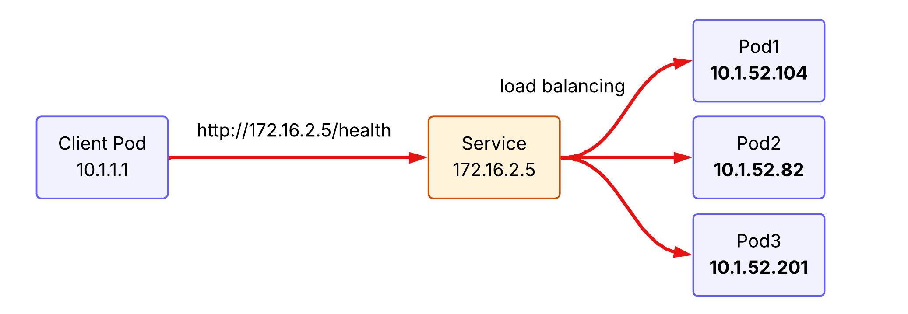

EKS Networking Fundamentals
Summary
This note explores how AWS EKS implements core Kubernetes networking requirements. We start with the Pod Network, explaining how unique IPs are assigned via network namespaces and how Pods communicate using veth pairs, bridges, and the AWS VPC CNI. We then dive into the Service Network, detailing how Service provides stable endpoints and load balancing for ephemeral Pods through kube-proxy (iptables and IPVS modes). We also examine the various Service types—ClusterIP, NodePort, LoadBalancer, and ExternalName—and their specific use cases. Finally, we introduce the Gateway Network, covering how external traffic enters the cluster via Ingress, the Gateway API, and the AWS Load Balancer Controller.
1. Kubernetes Networking Model
The Services, Load Balancing, and Networking page in the k8s official doc describes the following requirements for Kubernetes networking:
Pod: All pods can communicate with all other pods, whether they are on the same node or on different nodes. Pods can communicate with each other directly, without the use of proxies or address translation (NAT).Service: The Service API lets you provide a stable (long lived) IP address or hostname for a service implemented by one or more backend pods, where the individual pods making up the service can change over time.Gateway: The Gateway API (or its predecessor, Ingress) allows you to make Services accessible to clients that are outside the cluster.NetworkPolicy: NetworkPolicy is a built-in Kubernetes API that allows you to control traffic between pods, or between pods and the outside world.
The following sections are about how AWS EKS implements these requirements. Let's dive in the pod network.
2. Pod Network
Let's revisit the requirement for the pod networking:
Quote
All pods can communicate with all other pods, whether they are on the same node or on different nodes. Pods can communicate with each other directly, without the use of proxies or address translation (NAT).
2.1. Multiple IPs in a single node
In computer networking, if a host wants to talk to others, an IP address should be assigned to the host. Since a pod is the smallest unit for k8s networking, each pod should be assigned an IP address. But if you recall a networking 101 class you ever took in the past, a unit for the IP address is usually a single device(server, PC, router, etc), and thus programs in my laptop communicates each other by localhost(127.0.0.1). In k8s, a node is a single server and houses multiple pods. How could a single pod get assigned an IP and thus how does a single node end up with multiple IPs?
It turns out the smallest unit for the IP address assignment is not a single device but Network Namespace. Each network namespace has at least one network interface, an IP address, a port, and a routing table. In other words, network namespace is the smallest networking unit. Obviously, OS in a single node allows multiple network namespaces. In the k8s context, each pod is running under its own network namespace, with a set of network interface, IP addresses, ports, and routing tables.
{kind=link}
As described in the above image, a single IP address is assigned to each network namespace(or pod) in a node. With an IP address on each pod, how could we facilitate communications between them inside the node?
2.2. Communication within a node
{kind=link}
Two technologies are used to facilitate communication inside the node:
veth pair: Think of it as a virtual ethernet cable. Each end is connected to a different network interface. If a packet comes into one end, it goes out the other end.bridge interface: It works as L2 switch, connecting pods within a single node. This is implemented by CNI plugins.
If the above diagram looks confusing, try to understand it this way:
- each virtual network interface(
veth0andveth1) is the representation of a pod in a node. - the physical network interface in the node(
eth0) is a router in a node. - They are connected by the network switch(bridge interface).
- Overall, the entire diagram looks like a home network.
{kind=link}
Each pod has its own IP address and they are connected via the bridge interface, which makes possible the communication between pods in the same node. We have confirmed the principle of pod networking on the same node. But kubernetes networking requires more than that. We need to ensure pod networking on different nodes without Network Address Translation(NAT).
2.3. Communication between nodes
We need to understand the meaning of without NAT first. NAT is a technique to allow a host in a local network to talk to another host in the different network. Please refer to 05 Network Address Translation(NAT) page for more details. The way to avoid NAT is to assign each pod to non-overlapping IP address across nodes. If each pod has a unique IP address in the cluster, we can regard the entire cluster as a single local network, and thus NAT is not required.
Then how can we ensure a unique IP address for each pod across nodes in the same cluster? There are three ways:
2.3.1. Overlay (Flannel, VXLAN)

{kind=link}
2.3.2. BGP (Calico)

{kind=link}
2.3.3. Cloud Native (AWS VPC CNI)

{kind=link}
2.3.3.1. Secondary IP mode
In this default mode, each Pod is assigned a single secondary private IP address from the VPC subnet.
- Mechanism: Each Pod consumes one secondary IP "slot" on an ENI.
- Bottleneck: Every EC2 instance type has a hard limit on the number of ENIs and secondary IPs per ENI (e.g., a
t3.mediumsupports 3 ENIs with 6 IPs each, limiting pod density). - Density: Lower. The maximum number of Pods is roughly
(# of ENIs × (# of IPs per ENI - 1)) + 1.
2.3.3.2. Prefix mode
Introduced to solve the density problem, this mode allows AWS to assign /28 IPv4 prefixes (blocks of 16 IPs) to an ENI instead of individual secondary IPs.
- Mechanism: One "IP slot" on an ENI now holds a
/28prefix, providing 16 IP addresses for Pods. - Density: Much Higher. It virtually eliminates the IP-based capping per instance type, allowing nodes to support the Kubernetes standard of 110 or more pods.
- Subnet Impact: It can consume large chunks of subnet IP space quickly, so proper subnet sizing is critical.
3. Service Network
What we have learned so far is about pod-to-pod networking in a cluster, with an important assumption - pods are persistent. This assumption does not reflect the reality. Pods are in fact ephemeral, meaning it is often scraped and redeployed. Pods are changing, So is its IP address. From the source host point of view, it is a nightmare to keep following ever-changing destination IP address. That is where Service comes into play.
3.1. What does Service do?
{kind=link}
Service provides a stable (long-lived) IP address and hostname for a service. The source host now can make a request to the Service with the stable IP address and the Service forwards it to one of the backend pods. If a new pod is deployed behind the Service, Service learns its IP address and able to forward the receiving request to the backend pod.
Service is load balancing. Requests to Service are distributed across pods running behind. To illustrate, if the client pod make the same request to the service three times, the first request hits pod 1, the second request hits pod 2, and the third request hits pod 3 under the round-robin load balancing policy.
{kind=link}
3.2. kube-proxy implements Service concept
kube-proxy is a network proxy that runs on each node as a daemon in your cluster, implementing part of the Kubernetes Service concept. It maintains network rules on nodes that allow network communication to your Pods. When you create a Service (like a ClusterIP), Kubernetes assigns it a virtual IP. kube-proxy is responsible for "realizing" this virtual IP. It does this by watching the API Server for new Services and Endpoints, then updating the node's networking stack.
It operats in three primary modes:
3.2.1. iptables (default)
It creates iptables rules at Netfilter module in the node's kernel to redirect traffic destined for a Service's virtual IP to one of the backend Pods. It is the default mode for k8s cluster and uses a randomized choice for load balancing. Note that kube-proxy is a control plane that modifies iptables rules at Netfilter. Thus, packets never hit kube-proxy pods located in user space, but rather gets through Netfilter in kernel.
{kind=link}
iptables mode has the following advantages over legacy user space mode:
- Performance: Packets are handled entirely in kernel space by
Netfilter, avoiding expensive context switches between kernel and user space. - Reliability: If
kube-proxycrashes, existing traffic can still be routed via the established rules (though new services or endpoint changes won't be applied until it restarts). - Efficiency: Lower CPU and memory overhead as
kube-proxyonly manages the rules rather than acting as a data-path proxy.
However the performance would be degraded as the number of iptables rules gets increased(the packet need to read rules one by one).
3.2.2. IPVS (IP Virtual Server)
IPVS is Layer 4 load balancer working at Netfilter. It offers better performance for clusters with thousands of services. It supports more sophisticated load-balancing algorithms (least connection, shortest expected delay, etc.).
{kind=link}
Unlike iptables which uses a sequential list of rules (\(O(N)\)), IPVS uses a Hash Table (\(O(1)\)), ensuring consistent performance even as the number of services grows into the thousands.
3.2.3. nftables proxy
In this mode, kube-proxy configures packet forwarding rules using the nftables API of the kernel netfilter subsystem. For each endpoint, it installs nftables rules which, by default, select a backend Pod at random. The nftables API is the successor to the iptables API and is designed to provide better performance and scalability than iptables. The nftables proxy mode is able to process changes to service endpoints faster and more efficiently than the iptables mode, and is also able to more efficiently process packets in the kernel (though this only becomes noticeable in clusters with tens of thousands of services). This proxy mode is only available on Linux nodes, and requires kernel 5.13 or later. Please read iptables: The two variants and their relationship with nftables for more details.
3.2.4. eBPF mode + XDP(eXpress Data Path)
While the previous modes rely on the fixed logic of the Netfilter subsystem, eBPF (extended Berkeley Packet Filter) allows for running custom, high-performance programs directly within the Linux kernel in response to various events (like packet arrival).
- eBPF-based Load Balancing: Instead of using
iptablesorIPVSrules, specialized CNI plugins like Cilium use eBPF to implement service load balancing. It can bypass much of the standard Linux networking stack (like theconntracktable), significantly reducing latency and CPU overhead. - XDP (eXpress Data Path): XDP is a specific type of eBPF hook that runs at the earliest possible point in the network driver, before the packet is even allocated into a kernel buffer (
sk_buff). By processing packets directly at the NIC driver level, XDP can perform load balancing, DDoS protection, or packet dropping at near-line speeds.
{kind=link}
This combination represents the cutting edge of Kubernetes networking, providing the highest possible performance and observability, especially in massive-scale environments.
3.3. Service types
3.3.1. ClusterIP
ClusterIP is the default type of the Service in the k8s cluster. It is accessible only within the same cluster. A client outside of the cluster cannot access to it.
flowchart TD
subgraph Cluster ["Kubernetes Cluster"]
Client[Client Pod]
CIP[Service ClusterIP]
subgraph Backends ["Backend Pods"]
P1[Pod 1]
P2[Pod 2]
end
end
Client -- "Internal Request" --> CIP
CIP -- "Load Balance" --> P1
CIP -- "Load Balance" --> P23.3.2. NodePort
NodePort exposes the Service on each Node's IP at a static port (the NodePort). You can contact the NodePort Service, from outside the cluster, by requesting <NodeIP>:<NodePort>.
- Mechanism: It builds upon
ClusterIPby opening a specific port on all nodes. - Limitation: You are responsible for managing the node IP addresses and load balancing across them if a node goes down.
flowchart TD
External["External Client"]
subgraph Cluster ["Kubernetes Cluster"]
subgraph Node1 ["Worker Node 1"]
NP1["NodePort (e.g. 30080)"]
end
subgraph Node2 ["Worker Node 2"]
NP2["NodePort (e.g. 30080)"]
end
CIP[Service ClusterIP]
subgraph Backends ["Backend Pods"]
P1[Pod 1]
P2[Pod 2]
end
end
External -- "NodeIP1:30080" --> NP1
External -- "NodeIP2:30080" --> NP2
NP1 --> CIP
NP2 --> CIP
CIP -- "DNAT" --> P1
CIP -- "DNAT" --> P23.3.3. LoadBalancer
LoadBalancer exposes the Service externally using a cloud provider's load balancer (e.g., AWS NLB/ALB).
- Mechanism: It automatically creates a NodePort and ClusterIP Service to which the external load balancer routes.
- EKS Integration: In EKS, this typically triggers the creation of an AWS Network Load Balancer (NLB) or Classic Load Balancer (CLB) that directs traffic to the NodePort on your worker nodes.
flowchart TD
External["External Client"]
LB["Cloud Load Balancer (e.g. AWS NLB)"]
subgraph Cluster ["Kubernetes Cluster"]
subgraph Nodes ["Worker Nodes"]
NP["NodePort"]
end
CIP["ClusterIP"]
subgraph Backends ["Backend Pods"]
P1["Pod 1"]
P2["Pod 2"]
end
end
External -- "Public DNS/IP" --> LB
LB -- "Health-checked Routing" --> NP
NP --> CIP
CIP --> P1
CIP --> P23.3.4. ExternalName
ExternalName maps a Service to a DNS name instead of a pod selector.
- Mechanism: It returns a
CNAMErecord with the value defined in theexternalNamefield (e.g.,my.database.example.com). - Use Case: Useful for allowing Pods to reference external services (like an RDS instance) using a local Kubernetes DNS name.
flowchart TD
subgraph Cluster ["Kubernetes Cluster"]
Pod["Client Pod"]
DNS["CoreDNS"]
ExtSvc["Service (ExternalName)"]
end
RDS["External Service (e.g. AWS RDS)"]
Pod -- "1. Lookup 'my-db.svc.cluster.local'" --> DNS
DNS -- "2. Returns CNAME" --> ExtSvc
ExtSvc -- "3. Points to 'db.aws.com'" --> RDS
Pod -- "4. Connects directly to" --> RDS4. Exposing Kubernetes Applications
Now we have a clear picture of the request routing process between pods within a cluster. The next question popped up on my mind is how to expose applications running in the cluster to the outside world.
5. Gateway Network
While Service handles connectivity and load balancing within the cluster, the Gateway Network (comprising the modern Gateway API and its predecessor, Ingress) defines how external traffic from the internet or a VPC enters the cluster. In EKS, this layer typically leverages the AWS Load Balancer Controller to provision and manage AWS Application Load Balancers (ALB) and Network Load Balancers (NLB), providing advanced routing, TLS termination, and security integration at the cluster edge.